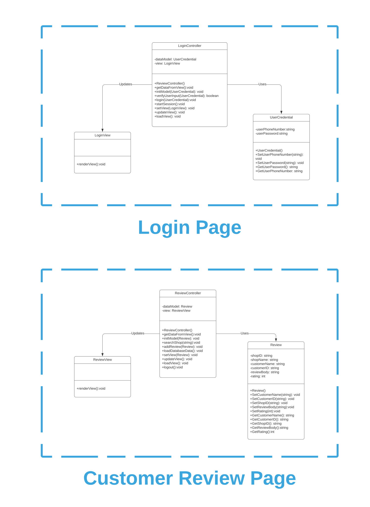

0. Cover Page
Software Design Specification
for
"Pocket Store"
Version 1.0.1
| Name | ID |
| Mohammed Safat Hosssain | 1731263042 |
| Ferdous Zeaul Islam | 1731136042 |
| Rifat Islam | 1731536042 |
CSE327 Section-2
Group: Procrastinators
Group Number: 10
Date: August 28, 2020
1. Introduction
The project is a platform between at home customers and local small businesses, where they can interact without the need to go outside. The interaction will primarily happen using the customer and shop-owner version of the android app. There is also going to be a website to post and/or view reviews on shops registered through the app.
2. Document Convention
The document is written following the IEEE template for SDS (Software Design Specification). The headers, sub-headers, paragraphs are written using HTML tags- 'h2', 'h3', 'h4' and 'p' respectively.
3. Description of Design Components
3.1 Server Side
Database: Firebase real time database will be used throughout this project. All kinds of user data and application data will be stored on the real-time database. Data will be stored as JSON and synchronized in realtime to every connected client. The same type of database will be used for the real-time order generation systems for customer-shopowner conversations.
Cloud Functions: Cloud functions will handle the database events triggered by the mobile applications. For the web application, it will handle the request and response accordingly to the responses. The whole thing will run in a managed environment by the server.
3.2 Client Side
Mobile Application: The customer application will allow users to place orders by exploring nearby shops. The shop-owner application will allow the shop-owner to handle and deliver those orders.
Application: Web application will run any HTML5 supported web browser on any device. Web application will be for customers review only.
3.3 Third Party Services
Several APIs will be used as third party services.
Firebase Auth: Firebase authentication will be used in our all three applications to ensure a secure authentication system on mobile and web applications. Phone number verification systems will be implemented with this API and the verified users will be able to login with their email and password.
Sinch SDK: Sinch will be used for real-time VoIP calling service between the customer and the shop-owner. Sinch is the backbone of our application’s built-in app-to-app calling feature.
Google Barcode Scanning: Barcode Scanning API will be used in our built-in barcode scanner for shop-owner application. It will decode the barcode of a product and the product details will be listed on the shop-owners product list.
4. High-Level Component Design
The diagram below describes the dependency of various components.

5. Class diagrams
5.1 Detailed Class Diagram(s)
Customer App- link to work


ShopOwner App- link to work
Classes fo phone number verification, setup profile and login pages are the same as customer app their diagram is not repeated here. The only different model class "shopUser" is given in the descriptions.


Web App- link to work

5.2 Detailed Class Description(s)
Customer App Classes:
1.Phone Number Verification Pages:
The classes used for phone number verification feature are given below,
1.1 Class Name : EnterPhoneNumberActivity
Purpose: Take phone number input from user.
Public Attributes: none
Public Methods:
- onVerifyingPhoneNumberUI(),
- onPhoneNumberVerificationDoneUI(),
- onPhoneNumberVerificationFailedUI(String: errorMessage)
PurposeThese methods define UI responses and are invoked by the “EnterPhoneNumberPresenter”.
1.2 Class Name : EnterPhoneNumberPresenter
Purpose: Handle business logic and facilitate phone number verification for the view.
Public Attributes: none
Public Methods:
-
Constructor
- EnterPhoneNumberView, reference to the view (activity)
-
Name-verifyPhoneNumber(String: phoneNumber)
Parameter-
- String: phoneNumber, the phone number string passed from user input
PurposeStart the phone verification process using phone number verification service
Parameter-
1.3 Class Name : VerificationCodeActivity
Purpose: Take verification code input from user.
Public Attributes: none
Public Methods:
- onVerifyingPhoneNumberUI(),
- onCodeVerificationDoneUI(),
- onCodeVerificationFailedUI(String: errorMessage)
PurposeThese methods define UI responses and are invoked by the “VerificationCodePresenter”.
1.4 Class Name :VerificationCodePresenter
Purpose: : Handle business logic, facilitate verification code checking and user authentication service for the view.
Public Attributes: none
Public Methods:
-
Constructor
Parameter-
- VerificationCodeView, reference to the view (activity)
- Name: signInWithVerificationCode(String: phoneNumber)
- String: phoneNumber, the phone number string passed from user input
Parameter-
PurposeStart the phone code checking service and sign in user if successful.
2.Setup Profile Pages:
The classes used for setting up a profile feature after phone number verification are given below,
2.1 Class Name : SetupProfileActivity
Purpose: Take user information from input in a form from user in the last step of sign up.
Public Attributes: none
Public Methods:
- onSettingUpProfileUI(),
- onSetupProfileSuccessfulUI(),
- onPhoneNumberVerificationFailedUI(String: errorMessage)onSetupProfileFailedUI(String: errorMessage)
Purpose: These methods define UI responses and are invoked by the “SetupProfilePresenter”.
2.2 Class Name :SetupProfilePresenter
Purpose: Handle business logic, facilitate profile setup in database.
Public Attributes: none
Public Methods:
-
Constructor
Parameter-
- SetupProfileView, reference to the view (activity)
- Name:setupProfile(User: user)
- User: user, the class containing information provided in the setup profile form.
Parameter-
Purpose: Verify and store user information to database.
2.3 Class Name :User
Purpose: Model class for Setup Profile presenter and view.
Public Attributes: none
Public Methods:
-
Constructor
- userId, String, unique userId stored in the database
- userName, String, name of the user.
- userPhoneNumber, String, phone number of the user
- userAddress, String, home address of the user
- latitude, double, latitude of the home address of user
- longitude, double, longitude of the user
- getters,setters
Parameter-
2.4 Class Name : AddressPickerActivity
Purpose: Take user address from map for the setup profile form.
Public Attributes: none
Public Methods:
- onFetchingAddressUI(),
- onFetchingAddressSuccessUI(),
- onFetchingAddressFailedUI(String: errorMessage)
Purpose: These methods define UI responses and are invoked by the “AddressPickerPresenter”.
2.5 Class Name :AddressPickerPresenter
Purpose: Handle business logic, facilitate reverse geo-coding service to fetch address from latitude, longitude.
Public Attributes: none
Public Methods:
-
Constructor
Parameter-
- AddressPickerView, reference to the view (activity)
- Geocode config variable
Name: fetchAddress(double: latitude, double: lonngitude)
- double: latitude, latitude of the location
- double: longitude, longitude of the location
Parameter-
Purpose: These methods define UI responses and are invoked by the “AddressPickerPresenter”.
2.6 Class Name :AddressComposite
Purpose: Model class for Address-Picker presenter and view
Public Attributes: none
Public Methods:
-
Constructor
- addressString, String, picked location’s address in plain text
- latitude, double, picked location’s latitude
- longitude, double, picked location’s longitude
- getters,setters
Parameter-
3.Login Page:
The classes used for logging in an existing user are given below,
3.1 Class Name : LoginActivity
Purpose: Take user input in login form.
Public Attributes: none
Public Methods:
- onVerifyingLoginUI(),
- onVerifyingLoginUI(),
- onLoginFailedUI(String: errorMessage)
Purpose: These methods define UI responses and are invoked by the “LoginPresenter”.
3.2 Class Name : LoginPresenter
Purpose: Handle business logic, facilitate login verification process.
Public Attributes: none
Public Methods:
-
Constructor
Parameter-
- LoginView, reference to the view (activity)
Name: loginUser(User: user)
- User: user, the class containing information provided in the login form.
Parameter-
Purpose: Check database and verify user credentials and log in the user.
4.View Nearby Shops in Map (home page):
Viewing shops nearby user’s homes feature requires classes,
4.1 Class Name ::HomeActivity
Purpose:Show a map containing nearby shops as map markers with color codes refering to their status.
Public Attributes: none
Public Methods:
onFetchingNearbyShopsUI()
onFetchFailedUI(String errorMessage)
-
Name- onFetchDoneUI(List<NearbyShop>)
- List<NearbyShop>, list of NearbyShop objects containing information on nearby shops
Name- onUpdateNearbyShopsUI(List
) - List<NearbyShop>, list of newly updated list of NearbyShop objects for UI
Purpose: These methods define UI responses and are invoked by the “HomePresenter”.
Parameter-
Purpose: Show the list of nearby shops in map fetched from database. Invoked by “HomePresenter”
Parameter-
Purpose: Show the updated list of nearby shops in map fetched from database. Invoked by “HomePresenter”
4.2 Class Name : HomePresenter
Purpose:Facilitate the nearby stores fetch process from database, handle the customer shop entering option.
Public Attributes: none
Public Methods:
Constructor
- HomeView, reference to the view (activity)
- HomeDatabaseHandler, reference to database handler
Name- fetchNearbyShops()
Name- goInsideShop(NearbyShop)
- NearbyShop
- onFetchNearbyShopsDoneFromDB(DataSnapshot),
- onNewShopAddedInDB(DataSnapshot),
- onShopRemovedInDB(DataSnapshot),
- onShopUpdatedInDB(DataSnapshot
Parameter-
Purpose:Start the fetch nearby shops process from database using the private database handler attribute
Parameter-
Purpose: Enter the shop, i.e make an entry in the shop’s customer queue in database.
Purpose: The methods are implemented by the “HomePresenter” from the “HomeDatabaseHandlerCallbacks” interface. These are invoked by the “HomeDatabaseHandler” when there is an subsequent change in data in the database and provide the presenter with updated data.
4.3 Class Name :HomeDatabaseHandler
Purpose: Handle fetching nearby shops information from the database and contain listeners for any change in data inside the database
Public Attributes: none
Public Methods:
-
Constructor
Parameter-
- DatabaseReference, reference to specific node in database
- HomeDatabaseHandlerCallbacks, reference to database database callback(presenter)
Name: fetchNearbyStoresFromDB()
Purpose: Fetch nearby shop objects from the database using the DatabaseReference attribute of the class.
4.4 Class Name : NearbyShop
Purpose:Model class for a nearby shop.
Public Attributes: none
Public Methods:
Constructor
- shopId, String, unique ID of the shop stored in database
- shopType, String, type of the shop three types allowed- conventional, stationary, bakery.
- shopName, String, name of the shop
- shopAddress, String, address of the shop in plain text
- shopLatitude, double, latitude of the shop’s location
- shopLongitude, double, longitude of the shop’s location
- status, String, status of the shop three types allowed- open, closed, busy
- perimeterRadius, int, radius of the area that the shop covers in meters- this is fixed to 100 meters initially.
- getters, setters
Parameter-
5.Inside Shop Customer Queue Page:
The customer queue visible after going inside the shop feature consists of,
5.1 Class Name : CustomerQueueActivity
Purpose: Show a list of customers waiting in queue of the shop.
Public Attributes: none
Public Methods:
- onFetchingCustomerQueueUI(),,
- onFetchDoneUI(List<CustomerWaitingInQueue>),
- onFetchFailedUI(String: errorMessage),
- onUpdateCustomerQueueUI(List<CustomerWaitingInQueue>)
Name:onShopOwnerWantsToConnectUI()
Purpose: Open the customer-shopowner conversation by app-to-app voice call page. Invoked by “CustomerQueuePresenter”.
Purpose: Open the customer-shopowner conversation by app-to-app voice call page. Invoked by “CustomerQueuePresenter”.
5.2 Class Name : CustomerQueuePresenter
Purpose: Manage database actions and corresponding UI response to change in customer queue, let the user enter/exit shop, detect when shopowner opts to connect.
Public Attributes: none
Public Methods:
-
Constructor
Parameter-
- CustomerQueueView, reference to the view (activity)
- CustomerQueueDatabaseHandler, reference to database handler
- ShopOwnerWantsToConnectDatabaseHandler, reference to database handler which detects when shopowner wants to connect
Name : fetchCustomerQueue()
Name :enterShop()
Name :exitShop()
- onFetchDoneFromDB(DataSnapshot),
- onNewCustomerAddedInDB(DataSnapshot),
- onCustomerRemovedInDB(DataSnapshot),
- onShopOwnerWantsToConnect()
Purpose: Start the fetch process of customer queue from database and provide list to UI.
Purpose: Enter user into shop, i.e create entry for user in database and list view.
Purpose: Exit user into shop, i.e remove entry for user in database and list view.
Purpose: These methods are implemented by the “CustomerQueuePresenter” from the “CustomerQueueDatabaseHandlerCallbacks” interface. These are invoked by the “CustomerQueueDatabaseHandler” when there is an subsequent change in data in the database and provide the presenter with updated data
Purpose: This method is implemented by the “CustomerQueuePresenter” from the “ShopOwnerWantsToConnectDatabaseHandlerCallbacks” interface. This method is invoked by the “CustomerQueueDatabaseHandler”, when the user is the first in queue and shopowner has opted to connect with next customer.
5.3 Class Name :ShopOwnerWantsToConnectDatabaseHandler
Purpose: Hold listeners for database change signalling shopowner wants to connect with user.
Public Attributes: none
Public Methods:
-
Constructor
Parameter-
- DatabaseReference, reference to specific node in database
- “ShopOwnerWantsToConnectDatabaseHandlerCallbacks”, reference to callback(presenter) to notify any event in database
5.4 Class Name : CustomerQueueDatabaseHandler
Purpose: Handle fetching customer queue of the entered shop from the database, contains listeners for any change in data inside the database and responsible for enter/exit of user.
Public Attributes: none
Public Methods:
-
Constructor
Parameter-
- DatabaseReference, reference to specific node in database
- CustomerQueueDatabaseHandlerCallbacks, reference to callback(presenter) which is notified when any change in database occurs
Name : fetchCustomerQueueFromDB()
Name :addUserToCustomerQueueInDB(CustomerWaitingInQueue: user)
- user, CustomerWaitingInQueue, the user as a CustomerWaitingInQueue object.
Name :removeUserFromCustomerQueueInDB(String: userId)
Purpose: Fetch the current list of customers from database.
Parameter-
Purpose: Insert user to the current list of customers in database as a CustomerWaitingInQueue object.
Purpose: Remove user from the current list of customers in database using user id
5.5 Class Name :CustomerWaitingInQueue
Purpose: Model class for customers in the queue list of the shop.
Public Attributes: none
Public Methods:
-
Constructor
- String: customerWaitingInQueueId, customer’s unique id (uid assigned at signup)
- String: customerPhoneNumber
- double: customerHomeAddress
- double: customerHomeLatitude
- double: customerHomeLongitude
getters & setters
Parameter-
6.Inside Shop Browse Products Page: :
6.1 Class Name : BrowseProductsActivity
Purpose: Show a list of products (if any) inputted by the shop.
Public Attributes: none
Public Methods:
- onFetchingShopProductsUI(),
- onFetchDoneUI(List<ShopProduct>),
- onFetchFailedUI(String: errorMessage),
- onUpdateCustomerQueueUI(List<ShopProduct>)
- Name :onShopOwnerWantsToConnectUI()
Purpose :These methods define UI responses and are invoked by the “EnterPhoneNumberPresenter”.
Purpose : These methods define UI responses and are invoked by the “EnterPhoneNumberPresenter”.
6.2 Class Name : BrowseProductsPresenter
Purpose: Manage database actions and corresponding UI response to change in shop products list, detect when shopowner opts to connect.
Public Attributes: none
Public Methods:
-
Constructor
Parameter-
- BrowseProductsView, reference to the view (activity)
- BrowseProductsDatabaseHandler, reference to database handler
Name : fetchShopProducts()
- onFetchDoneFromDB(DataSnapshot),
- onNewProductAddedInDB(DataSnapshot),
- onProductRemovedInDB(DataSnapshot),
- onShopOwnerWantsToConnect()
Purpose: Start the fetch process of products inputted by the shop from database and provide the list to UI.
Purpose: These methods are implemented by the “BrowseProductsPresenter” from the “BrowseProductsDatabaseHandlerCallbacks” interface. These are invoked by the “BrowseProductsDatabaseHandler” when there is an subsequent change in data in the database and provide the presenter with updated data.
Purpose: These methods are implemented by the “BrowseProductsPresenter” from the “BrowseProductsDatabaseHandlerCallbacks” interface. These are invoked by the “BrowseProductsDatabaseHandler” when there is an subsequent change in data in the database and provide the presenter with updated data.
6.3 Class Name: BrowseProductsDatabaseHandler
Purpose: Handle fetching products inputted by the shop from the database, contains listeners for any change in data inside the database.
Public Attributes: none
Public Methods:
-
Constructor
Parameter-
- DatabaseReference, reference to specific node in database
- BrowseProductsDatabaseHandlerCallbacks, reference to callback(presenter) which is notified when any change in database occurs
Name:fetchShopProductsFromDB()
Purpose: Handle fetching products inputted by the shop from the database, contains listeners for any change in data inside the database.
6.4 Class Name :ShopProduct
Purpose:Model class for products in the shop’s browse products list.
Public Attributes: none
Public Methods:
-
Constructor
- String: productId, product’s unique id (uid assigned at signup)
- String: productName
- int: quantity
- String: quantityUnit,
- Decimal: pricePerQuantity
getters & setters
Parameter-
7.Inside Shop ChatFeed:
The global chatfeed for customers waiting in queue is implemented using classes,
7.1 Class Name : ShopChatFeedActivity
Purpose:Show list of chat messages by customers waiting in queue and allow user to write in feed.
Public Attributes: none
Public Methods:
- onFetchingChatFeedUI(),
- onFetchDoneUI(List<ChatMessage>),
- onFetchFailedUI(String: errorMessage),
- onUpdateChatFeedUI(List<hatMessage>)
- Name: onShopOwnerWantsToConnectUI()
Purpose : These methods define UI responses and are invoked by the “EnterPhoneNumberPresenter”.
Purpose : Open the customer-shopowner conversation by app-to-app voice call page. Invoked by “ShopChatFeedPresenter”.
7.2 Class Name :ShopChatFeedPresenter
Purpose: Manage database actions and corresponding UI response to change in chat feed, user writes messages to chatfeed, shopowner opts to connect.
Public Attributes: none
Public Methods:
-
Constructor
Parameter-
- ShopChatFeedView, reference to the view (activity)
- ShopChatFeedDatabaseHandler, reference to database handler
Name: loginUser(User: user)
Name: sendChatMessage(ChatMessage)
- ChatMessage
- onFetchDoneFromDB(DataSnapshot),
- onNewChatMessageAddedInDB(DataSnapshot)
- onChatMessageSendFailedToDB(DataSnapshot)
- onShopOwnerWantsToConnect()
Purpose: Start the fetch process of chat messages in the shop’s chatfeed from database and provide the list to UI
Parameter-
Purpose: Send message from user to the chatfeed.
Purpose: These methods are implemented by the “ShopChatFeedPresenter” from the “ShopChatFeedDatabaseHandlerCallbacks” interface. These are invoked by the “ShopChatFeedDatabaseHandler” when there is an subsequent change in data in the database and provide the presenter with updated data.
Purpose: These method is implemented by the “ShopChatFeedPresenter” from the “ShopChatFeedDatabaseHandlerCallbacks” interface. These are invoked by the “ShopChatFeedDatabaseHandler” when user’s message send attempt fails.
Purpose: The method is implemented by the “ShopChatFeedPresenter” from the “ShopOwnerWantsToConnectDatabaseHandlerCallbacks” interface. This method is invoked by the “BrowseProductsDatabaseHandler”, when the user is the first in queue and shopowner has opted to connect with next customer.
7.3Class Name :ShopChatFeedDatabaseHandler
Purpose: : Handle fetching chatfeed of the shop from the database, contains listeners for any change in data inside the database.
Public Attributes: none
Public Methods:
-
Constructor
Parameter-
- DatabaseReference, reference to specific node in database
- ShopChatFeedDatabaseHandlerCallbacks, reference to callback(presenter) which is notified when any change occurs in database
Name: fetchShopChatFeedFromDB()
Name: sendMessageToDB(ChatMessage)
- ChatMessage, a chat message object to be stored in database
Purpose: Fetch all the chat messages from the shop’s chatfeed in database.
Parameter-
Purpose: Send a chat message to the shop’s chatfeed in database.
7.4 Class Name :ChatMessage
Purpose: Model class for chat messages in the shop’s chatfeed.
Public Attributes: none
Public Methods:
-
Constructor
- String: chatMessageId, product’s unique id (uid assigned at signup)
- String: authorUsername
- String: receipientUsername
- String: content,
- String: time
getters & setters
Parameter-
8.Order Generation by Conversation with Shopowner Page:
The feature of order generation by conversation between customer & shopowner requires classes,
8.1 Class Name :CustomerShopOwnerConnectionActivity
Purpose: Show UI components of the app-to-app voice call with the shop, show a product list that is generated by editing from both end. The price field of each list item is blocked for the customer user.
Public Attributes: none
Public Methods:
- onConnectingWithShopOwnerUI(),
- onConnectionEstablishedUI(),
- onConnectionFailedUI(String: errorMessage),
- onCallDisconnectedUI()
- Name :onProductListEditedByShoOwnerUI(ProductListItem, int: index),
- User: user, the class containing information provided in the login form.
- int: index, index of the exact product list item in the list where edit occurred.
- onPlacingOrderUI(),
- onOrderPlaceSuccessUI(),
- onOrderPlaceFailedUI(String: errorMessage)
Purpose: Model class for chat messages in the shop’s chatfeed.
Parameter-
Purpose: : Show edits done to a product list item from the shopowner end. Invoked by “CustomerShopOwnerConnectionPresenter”
Purpose: The methods provide UI response for subsequent end of conversation order placement related events.
8.2 Class Name :CustomerShopOwnerConnectionPresenter
Purpose: Manage and provide- app to app voice call between user and shopowner, realtime updates to product list done by both end, order placement. And control UI responses for all of these.
Public Attributes: none
Public Methods:
Constructor
- CustomerShopOwnerConnectionView, reference to view(activity)
- CustomerShopOwnerConnectionDatabaseHandler, reference to database handler for customer shopowner realtime interaction
- VoiceOverInternetHandler, reference to app to app voice call feature handler between customer-shopowner
- PlaceOrderDatabaseHandler, reference to database handler for order placement
-
Name:leaveConversation()
Purpose: Immediately disconnects the call without placing any order.
-
Name– updateProductNameForProductListItemAsUserTypes(String: text, String: productListItemId)
- String: text, the text whatever user typed in name field of a product list item.
- String: productListItemId, the unique id of the product list item where user typed.
-
Name: updateProductQuantityForProductListItemAsUserTypes(String: quantity, String: productListItemId)
- String: quantity, the quantity whatever user typed in quantity field of a product list item.
- String: productListItemId, the unique id of the product list item where user typed.
-
Name: addNewProductListItemToProductList(ProductListItem)
- ProductListItem, a hollow ProductListItem object, meaning it contains empty strings and zero in the priceOfWhole quantity attribute.
-
Name: setCustomerConfirm(boolean)
- boolean, state of customer confirmation field of the whole order.
-
Name:placeOrderFromCustomerShopOwnerInteraction(CustomerShopOwnerInteraction)
- CustomerShopOwnerInteraction, a CustomerShopOwnerInteraction object that holds all the relevant data generated during the conversation of both parties.
- onProductListItemNameEditedInDB(Datasnapshot)
- onProductListItemPriceEditedInDB(Datasnapshot)
- onShopOwnerConfirmationChangedInDB(Datasnapshot)
- onConfigDone()
- onFailure()
- onCallConnected(String: callerId)
- onCallDisconnected()
- onPlaceOrderSuccess()
- onPlaceOrderFailed()
getters & setters
Parameter-
Parameter-
Purpose: Edit the product name field in database and UI.
Parameter-
Purpose: Edit the quantity field in database and UI.
Parameter-
Purpose: Create a hollow product list item in database and UI to be edited from both end.
Parameter-
Purpose: Customer confirmation for the order is to be set in the database.
Parameter-
Purpose: Finalize the order by making database entry.
Purpose:These methods are implemented by the “CustomerShopOwnerConnectionPresenter” from the “CustomerShopOwnerConnectionDatabaseHandlerCallbacks” interface. These are invoked by the “CustomerShopOwnerConnectionDatabaseHandler” when there is subsequent change in any product list item field or order confirmation field in the database in realtime from the shopowner’s end and provide the presenter with updated data.
Purpose:These methods are implemented by the “CustomerShopOwnerConnectionPresenter” from the “CustomerShopOwnerConnectionDatabaseHandlerCallbacks” interface. These are invoked by the “CustomerShopOwnerConnectionDatabaseHandler” when there is subsequent change in any product list item field or order confirmation field in the database in realtime from the shopowner’s end and provide the presenter with updated data.
Purpose: These methods are implemented by the “CustomerShopOwnerConnectionPresenter” from the “PlaceOrderDatabaseHandlerCallbacks” interface. These are invoked by the “PlaceOrderDatabaseHandler” after the order has been placed successfully or fails.
8.3 Class Name :VoiceOverInternetHandler
Purpose: Handle app to app voice call between user and shopowner.
Public Attributes: none
Public Methods:
-
Constructor
Parameter-
- String: receiverId, customer's(user) caller id
- VoiceOverInternetHandlerCallbacks, reference to callback(presenter) to notify when any app-to-app call event occur
Name: setupConfigs()
Name:answerCall()
Name:hangUpCall()
- enableLoudSpeaker()
- disableLoudSpeaker()
Purpose::Sets up required config variables for the thirdparty voip service.
Purpose: Answer the call as soon as received, which was initiated from shopowner’s end.
Purpose:Disconnect the call immediately.
Purpose:The methods control the loud speaker on/off during call.
8.4 Class Name :CustomerShopOwnerConnectionDatabaseHandler
Purpose: Handle fetching any changes in the generating order, of each product list item, from the shopowner’s end in realtime from the database using listeners. Also sends to database any change in the generating order’s product list items done by the user.
Public Attributes: none
Public Methods:
Constructor
- DatabaseReference, reference to specific node in database
- CustomerShopOwnerConnectionDatabaseHandlerCallbacks, reference to callback(presenter) which is notified when any change in database occur
Name: updateProductNameForProductListItemAsUserTypesDB(String: productName, String: productListItemId)
- String: productName, the edited name of the productId
- String: productListItemId, the unique id of the exact product list item
Name: updateProductQuantityForProductListItemAsUserTypesDB(String: text, String: productListItemId)
- String: text, the text form of the quantity written by user like- 10kgs, 2hali etc.
- String: productListItemId, the unique id of the exact product list item
Name: addNewProductListItemToProductListDB(ProductListItem)
- ProductListItem, a hollow object of ProductListItem class, contains empty strings and zero in the priceOfWholeQuantity filed.
Name:setCustomerConfirmStateDB(boolean)
- boolean, state of customer confirmation field of the whole order.
Parameter-
Parameter-
Purpose: Update edits done by the user in a product list item’s name field to the database instantly.
Parameter-
Purpose: Update edits done by the user in a product list item’s quantity field to the database instantly.
Parameter-
Purpose: Adds an placeholder for new product list item in the database instantly
Parameter-
Purpose:sets customer confirm state in the database instantly.
8.5 Class Name :PlaceOrderDatabaseHandler
Purpose: Handle order placement from the generated products list into database.
Public Attributes: none
Public Methods:
Constructor
- DatabaseReference, reference to specific node in database
- PlaceOrderDatabaseHandlerCallbacks, reference to database callback(presenter) to notify about order placement success/failure
Name:placeOrderInDB(Order)
- Order, object containing all the order’s information.
Parameter-
Parameter-
Purpose: Create entry of the order into database.
8.6 Class Name :ProductListItem
Purpose: Model class for each product list item in an Order
Public Attributes: none
Public Methods:
Constructor
- String: productListItemId, product list item’s unique id
- String: productName
- String: quantity, for example- “2kg”, “2 hali”, “1 packet” etc
- Decimal: priceOfWholeQuantity
- getters & setters
Parameter-
8.7 Class Name :OrderPlacingCustomer
Purpose: Model class for each user(customer) placing the Order.
Public Attributes: none
Public Methods:
Constructor
- String: customerId, customer’s unique id
- String: customerUsername
- String: customerPhoneNumber
- String: customerHomeAddress
- double: customerHomeLatitude
- double: customerHomeLongitude
- getters & setters
Parameter-
8.8 Class Name :OrderPlacingShop
Purpose: Model class for each user(customer) placing the Order.
Public Attributes: none
Public Methods:
Constructor
- String: shopId, shop’s unique id
- String: shopName
- String: shopPhoneNumber.
- String: shopAddress.
- double: shopLatitude
- double: shopLongitude
- getters & setters
Parameter-
8.9 Class Name :CustomerShopOwnerInteraction
Purpose:Model class for the customer-shopowner interaction, i.e genearting order.
Public Attributes: none
Public Methods:
Constructor
- OrderPlacingShop, shop object containing all shop’s information
- OrderPlacingCustomer, customer object containing all customer’s information
- List < ProductListItem >: productList, list of all the products ordered.
- Decimal: totalPrice, price of the whole order.
- boolean: customerConfirmed, state of customer confirmation for the order.
- boolean: shopOwnerConfirmed, state of shopowner confirmation for the order
- getters & setters
Parameter-
8.10 Class Name :Order
Purpose:Model class for the Order to be placed.
Public Attributes: none
Public Methods:
Constructor
- String: orderId, unique id of the order
- OrderPlacingShop, shop object containing all shop’s information
- OrderPlacingCustomer, customer object containing all customer’s information
- List<ProductListItem>: productList, list of all the products ordered.
- Decimal: totalPrice, price of the whole order.
- String: orderPlacementTime
- boolean: customerConfirmed, state of customer confirmation for the order.
- boolean: shopOwnerConfirmed, state of shopowner confirmation for the order
- getters & setters
Parameter-
9.View/Confirm Pernding Orders Page:
The viewing and confirmation of placed orders by customer user requires classes,
9.1 Class Name :PendingOrdersActivity
Purpose:Show list of pending orders.
Public Attributes: none
Public Methods:
- onFetchingPendingOrdersUI(),
- onFetchDoneUI(List<PendingOrder>),
- onFetchFailedUI(String: errorMessage),
- Name:onConfirmPendingOrderUI(Order)
Purpose: These methods define UI responses and are invoked by the “LoginPresenter”.
Purpose: These methods define UI responses and are invoked by the “LoginPresenter”.
9.2 Class Name :PendingOrdersPresenter
Purpose:: Manage database actions and corresponding UI response to change in pending orders list.
Public Attributes: none
Public Methods:
Constructor
- PendingOrdersView, reference to view(activity)
- PendingOrderDatabaseHandler, reference to specific node in database
Name:fetchPendingOrders()
Name:confirmOrder(String: orderId)
- String: orderId, unique id of the order
- onFetchDoneFromDB(DataSnapshot),
- onOrderRemovedInDB(DataSnapshot)
Parameter-
Purpose:Start the fetch process of pending orders from database and provide the list to UI.
Parameter-
Purpose: Set the customer confirmation to true in database.
Purpose: These methods are implemented by the “PendingOrdersPresenter” from the “PendingOrdersDatabaseHandlerCallbacks” interface. These are invoked by the “PendingOrdersDatabaseHandler” when all pending orders are fetched, an order is removed in the database and provide the presenter with updated data.
9.3 Class Name :PendingOrderDatabaseHandler
Purpose:: Handle fetching all pending orders of the user from the database, contains listeners for any change in data inside the database.
Public Attributes: none
Public Methods:
Constructor
- DatabaseReference, reference to specific node in database
- PendingOrderDatabaseHandlerCallbacks, reference to database callback(presenter) to notify about changes in database
Name:fetchPendingOrdersFromDB()
Name:confirmPendingOrderInDB(String: orderId)
- String: orderId, unique id of the order to be confirmed by user(customer).
Parameter-
Purpose:Fetch all the pending orders from database.
Parameter-
Purpose:Set customer confirmation of a pending order to true
9.4 Class Name :PendingOrder
Purpose:Model class for the user’s(customer) pending orders.
Public Attributes: none
Public Methods:
Constructor
- String: orderId, uniqur id of the order
- OrderPlacingShop, shop object containing all shop’s information
- List<ProductListItem>: productList, list of all the products ordered
- Decimal: totalPrice, price of the whole order.
- String: orderPlacementTime
- boolean: customerConfirmed, state of customer confirmation for the order.
- boolean: shopOwnerConfirmed, state of shopowner confirmation for the order
- getters & setters
Parameter-
Shopowner App:
1.Phone Verification, Setup Profile, Login:
The steps are exactly the same as customer app with the exception only in the Setup Profile form fields and the ShopUser model class.
1.1 Class Name : ShopUser
Purpose: Model class for the shop user for setup profile page
Public Attributes: none
Public Methods:
Constructor
- String: shopId, unique id of the shop
- String: shopOwnerName, name of the shopowner
- String: shopName, name of the shop
- String: shopType, shop types- conventional, bakery, stationary
- String: shopPhoneNumber, phone number used in verification
- String: shopAddress
- double: shopLatitude
- double: shopLongitude
- int: shopPerimeterRadius, radius of the area covered by the shop in meters, initially set to 100.
Parameter-
2.Customer Queue Page (home page):
The classes required are,
2.1 Class Name : CustomerQueueActivity
Purpose: Show the customer queue list, let shopowner chose to accept next customer.
Public Attributes: none
Public Methods:
- onFetchingCustomerQueueUI()
- onFetchDoneUI()
- onFetchFailedUI(String: errorMessage)
- onUpdateCustomerQueueUI(List<CustomerWaitingInQueue>)
Purpose:These methods define UI responses and are invoked by the “CustomerQueuePresenter”.
2.2 Class Name :CustomerQueuePresenter
Purpose: Manage database actions and corresponding UI response to change in customer queue, let shopowner accept next customer
Public Attributes: none
Public Methods:
Constructor
- CustomerQueueView, reference to the view(activity)
- CustomerQueueDatabaseHandler, reference to database handler
Name:fetchCustomerQueue()
Name:acceptNextCustomerFromQueue()
- onFetchDoneFromDB(DataSnapshot),
- onNewCustomerAddedInDB(DataSnapshot),
- onCustomerRemovedInDB(DataSnapshot),
Parameter-
Purpose: Start the fetch process of customer queue from database and provide list to UI.
Purpose: Accept, i.e connect with the customer first in queue
Purpose: These methods are implemented by the “CustomerQueuePresenter” from the “CustomerQueueDatabaseHandlerCallbacks” interface. These are invoked by the “CustomerQueueDatabaseHandler” when there is an subsequent change in data in the database and provide the presenter with updated data
2.3 Class Name :CustomerQueueDatabaseHandler
Purpose: Handle fetching customer queue of the entered shop from the database, contains listeners for any change in data inside the database and responsible for starting the connection with customer first in queue.
Public Attributes: none
Public Methods:
Constructor
- DatabaseReference, reference to specific node in database
- CustomerQueueDatabaseHandlerCallbacks, reference to database callback(presenter) which will be notified when any data change occurs in database
Name:fetchCustomerQueueFromDB()
Name:acceptNextCustomerFromDB()
Parameter-
Purpose:Fetch the current list of customers from database.
Purpose:Set the “shopOwnerWantsToConnect” fields in the database to true for the first customer in queue to alert let the customer
2.4 Class Name :CustomerWaitingInQueue
same as in customer app(point-5.5)
3.View/Add/Edit Shop Products Pages:
The feature that lets shopowners input a subset of available products requires classes,
3.1 Class Name : ShopProductsActivity
Purpose:Show the already inputted list of products, let shopowner edit and input new ones.
Public Attributes: none
Public Methods:
- onFetchingProductsUI()
- onFetchDoneUI()
- onFetchFailedUI(String: errorMessage)
- onNewProductAddedUI(ShopProduct)
Purpose:These methods define UI responses and are invoked by the “ShopProductsPresenter”.
3.2 Class Name: ShopProductsPresenter
Purpose: Update to database edits made by shopowner and handle corresponding UI response.
Public Attributes: none
Public Methods:
Constructor
- ShopProductsView, reference to view(activity)
- ShopProductsDatabaseHandler, reference to database handler
Name:fetchShopProducts()
- addShopProduct(ShopProduct)
- updateShopProduct(ShopProduct)
- updateShopProduct(ShopProduct)
- ShopProduct, model of a product
- onFetchDoneFromDB(DataSnapshot)
Parameter-
Purpose:- Start the fetch process of previously inputted products from database and provide list to UI.
Parameter-
Purpose:Alter a particular product in the list to the database & UI.
Purpose:The method is implemented by the “ShopProductPresenter” from the “ShopProductDatabaseHandlerCallbacks” interface, invoked by the “ShopProductDatabaseHandler” the list of products already inputted by the shopowner have been downloaded
3.3 Class Name :ShopProductsDatabaseHandler
Purpose: ShopProductsDatabaseHandler
Public Attributes: none
Public Methods:
Constructor
- DatabaseReference, reference to specific node in database
- ShopProductsDatabaseHandlerCallbacks, reference to database callback(presenter) which will be notified when any data change occurs in database
Name:fetchShopProductsFromDB()
- addShopProductToDB(ShopProduct)
- addShopProductToDB(ShopProduct)
- updateShopProductInDB(ShopProduct)
- ShopProduct, model of a product
Parameter-
Purpose:- Fetch process of previously inputted products from database.
Parameter-
Purpose:Alter a particular product in the list to the database.
3.4 Class Name :ShopProduct
same as in customer app(point-6.4)
3.5 Class Name :ProductBarcodeScanActivity
Purpose:Scan product barcodes to take input from shopowner.
Public Attributes: none
Public Methods:
- onScanningUI()
- onScanDoneUI()
- onScanFailedUI(String: errorMessage)
Purpose: These methods define UI responses and are invoked by the “ProductBarcodeScanPresenter”.
3.6 Class Name: ProductBarcodeScanPresenter
Purpose:Handle the product scanner service and corresponding UI response.
Public Attributes: none
Public Methods:
Constructor
- ProductBarcodeScanView, reference to view(activity)
- BarcodeScanningHandler, reference to barcode scanning sevice handler
Name:scanProductBarcode()
- onScanSuccessful(ScannedProduct)
- onScanFailed()
Parameter-
Purpose:-Start the barcode scanning process.
Purpose: These methods are implemented by the “ProductBarcodeScanPresenter” from the “BarcodeScanningHandlerCallbacks” interface, invoked by the “BarcodeScanningHandler”.
3.7 Class Name: BarcodeScanningHandler
Purpose:Handle the barcode scanning thirdparty service used.
Public Attributes: none
Public Methods:
Constructor
- ScannedProduct, a hollow object of the product to be scanned
- BarcodeScanningHandlerCallbacks, reference to barcode scanning callback(presenter) which will be notified of success/ failure of the barcode scan process
Name:startBarcodeScanService()
Parameter-
Purpose:-Scan barcode and identify product
3.8 Class Name :ScannedProduct
Purpose: Model class for scanned/will be scanned product.
Public Attributes: none
Public Methods:
-
Constructor
Parameter-
- String: productName
- Decimal: pricePerUnit
- String: barcode
- getters & setters
4.Order Generation by Conversation with Customer Page:
The main feature of the app that lets shopowners customers converse and form the order together in realtime.
4.1 Class Name : CustomerShopOwnerConnectionActivity
Purpose:Show the on call page, let shopowner edit prices field for product list items.
Public Attributes: none
Public Methods:
- onConnectingWithCustomerUI()
- onConnectionEstablishedUI()
- onConnectionFailedUI(String: errorMessage)
- onNewProductAddedUI(ShopProduct)
- Name:onProductListEditedByCustomerUI(ProductListItem, int: index)
- ProductListItem, model for a particular product list item in the generating order list
- int: index, index of the particular product list item in the genearting order list.
Purpose:These methods define UI responses and are invoked by the “ShopProductsPresenter” for subsequent events regarding the ongoing app to app voice call.
Parameter-
Purpose: Make changes to particular product list item in the list view.
4.2 Class Name : CustomerShopOwnerConnectionPresenter
Purpose:Manage and provide- app to app voice call between customer and shopowner, realtime updates to product list done by both end. And control UI responses for all of these.
Public Attributes: none
Public Methods:
Constructor
- CustomerShopOwnerConnectionView, reference to view(activity)
- CustomerShopOwnerConnectionDatabaseHandler, reference to database handler for customer shopowner realtime interaction
- VoiceOverInternetHandler, reference to app to app voice call feature handler between customer-shopowner
- CustomerReadyToConnectDatabaseHandler, reference to database handler that lets shopowner know customer is ready to receive call now
- onCustomerReadyToConnect()
- Name:leaveConversation()
- Name: updateProductNameForProductListItemAsUserTypes(String: text, String: productListItemId)
- String: text, the text whatever user typed in name field of a product list item.
- String: productListItemId, the unique id of the product list item where user typed
- Name: updateProductQuantityForProductListItemAsUserTypes(String: quantity, String: productListItemId)
- String: quantity, the quantity string whatever user typed in quantity field of a product list item.
- String: productListItemId, the unique id of the product list item where user typed.
- Name: updateProductPriceForProductListItemAsUserTypes(Decimal: priceOfWholeQuantity, String: productId)
- Decimal: priceOfWholeQuantity, the price whatever shopowner typed in quantity field of a product list item.
- String: productListItemId, the unique id of the product list item where user typed.
- Name: setShopOwnerConfirm(boolean)
- boolean, state of shopowner confirmation field of the whole order.
- onNewProductListItemAddedByInDB(Datasnapshot)
- onProductListItemNameEditedInDB(Datasnapshot)
- onProductListItemQuantityEditedInDB(Datasnapshot)
- onCustomerConfirmationChangedInDB(Datasnapshot)
- onConfigDone()
- onCallOutgoing()
- onFailure()
- onCallConnected(String: callerId)
- onCallDisconnected()
Parameter-
Purpose:The method is implemented from “CustomerReadyToConnectDatabaseHandlerCallback” interface and is invoked by “CustomerReadyToConnectDatabaseHandler” when customer is done with voip setup and is ready to join in app to app voice call.
Purpose:Immediately disconnects the call without placing any order.
Parameter-
Purpose:Edit the product name field in database and UI.
Parameter-
Purpose:Edit the product quantity field in database and UI.
Parameter-
Purpose:Edit the product price field in database and UI.
Parameter-
Purpose:Shopowner confirmation for the order is to be set in the database
Purpose: These methods are implemented by the “CustomerShopOwnerConnectionPresenter” from the “CustomerShopOwnerConnectionDatabaseHandlerCallbacks” interface. These are invoked by the “CustomerShopOwnerConnectionDatabaseHandler” when there is subsequent change in any product list item field or order confirmation field in the database in realtime from the customer’s end and provide the presenter with updated data
Purpose: These methods are implemented by the “CustomerShopOwnerConnectionPresenter” from the “VoiceOverInternetHandlerCallbacks” interface. These are invoked by the “VoiceOverInternetHandler” when there is subsequent events related to the app-to-app voice call occur.
4.3 Class Name :CustomerReadyToConnectDatabaseHandler
Purpose: Hold listeners for database change signalling customer is ready to connect with shopowner.
Public Attributes: none
Public Methods:
-
Constructor
Parameter-
- DatabaseReference, reference to specific node in database
- CustomerReadyToConnectDatabaseHandlerCallbacks, reference to database callback(presenter) which will be notified when customer is ready to connect
4.4 Class Name :VoiceOverInternetHandler
Purpose:Handle app to app voice call between shopowner and customer.
Public Attributes: none
Public Methods:
Constructor
- String: receiverID, unique id of the customer the call is going to
- String: calledID, unique id of the shopowner who will make the call
- VoiceOverInternetHandlerCallbacks, reference to voi sevice callback(presenter) which will be notified when any app to app call related events occur
Name:setupConfigs()
Name:makeCall()
Name:hangUpCall()()
- enableLoudSpeaker()
- disableLoudSpeaker()
Parameter-
Purpose:-Sets up required config variables for the thirdparty voip service
Purpose:-Initiate the call from shopowner’s end.
Purpose:-Disconnect the call immediately.
Purpose:-The methods control the loud speaker on/off during call.
4.5 Class Name : CustomerShopOwnerConnectionDatabaseHandler
Purpose: Update into database any edits in the product list items done by the shopowner, hold listeners for any change to product list items in database from the cutomer’s end.
Public Attributes: none
Public Methods:
Constructor
- DatabaseReference, reference to exact node in database
- CustomerShopOwnerConnectionDatabaseHandlerCallbacks, reference to callback(presenter) to notify of realtime changes happening to database
Name: updateProductNameForProductListItemAsUserTypesToDB(String: text, String: productListItemId)
- String: text, the text whatever user typed in name field of a product list item.
- String: productListItemId, the unique id of the product list item where shopowner typed.
Name: updateProductQuantityForProductListItemAsUserTypesInDB(String: quantity, String: productListItemId)
- String: quantity, the quantity string whatever user typed in quantity field of a product list item.
- String: productListItemId, the unique id of the product list item where shopowner typed.
Name: updateProductPriceForProductListItemAsUserTypesInDB(Decimal: priceOfWholeQuantity, String: productId)
- Decimal: priceOfWholeQuantity, the price whatever shopowner typed in quantity field of a product list item.
- String: productListItemId, the unique id of the product list item where user typed.
Name: setShopOwnerConfirm(boolean)
- boolean, state of shopowner confirmation field of the whole order.
Parameter-
Parameter-
Purpose: Update the edited product name field for particular product list item in database.
Parameter-
Purpose: Update the edit in product quantity field for particular product list item in database
Parameter-
Purpose: Edit the product price field in database.
Parameter-
Purpose: Set shopowner confirmation in the database.
4.6 Class Name :ProductListItem
same as in customer app(point-8.6).
4.7 Class Name :CustomerShopOwnerInteraction
same as in customer app(point-8.9)
5.View/Confirm/Cancel Pernding Orders Page:
Viewing/confirmaing/removing of placed orders by shops owners requires classes,
5.1 Class Name : PendingOrdersActivity
Purpose:Show list of pending orders.
Public Attributes: none
Public Methods:
- onFetchingPendingOrdersUI(),
- onFetchDoneUI(List<Order>),
- onFetchFailedUI(String: errorMessage),
- onConfirmingPendingOrderUI(Order)
- onConfirmingPendingOrderUI(Order).
- onConfirmPendingOrderFailedUI(String: errorMessage)
Purpose:These methods define UI responses related to fetching pending orders and are invoked by the “PendingOrdersPresenter”.
Purpose: These methods define UI responses related to pending order confirmation and are invoked by the “PendingOrdersPresenter”.
5.2 Class Name: PendingOrderPresenter
Purpose: Manage database actions and UI events for- pending order confirmation/cancellation, pending order state change.
Public Attributes: none
Public Methods:
Constructor
- PendingOrdersView, reference to view(activity)
- PendingOrderDatabaseHandler, reference to database handler
Name: fetchPendingOrders()
Name:confirmPendingOrder(String: orderId)
- String: orderId, unique id of the pending order.
Name:cancelPendingOrder(String: orderId)
- String: orderId, unique id of the pending order.
- onFetchDoneFromDB(Datasnapshot)
- onPendingOrderWasConfirmedByCustomer(Datasnapshot)
Parameter-
Purpose: Start the fetch process of pending orders from database and tell UI..
Purpose:Start the confirmation process of a pending in database and tell UI.
Parameter-
Purpose:Start the cancellation process of a pending in database and tell UI.
Parameter-
Purpose: These methods are implemented by the “PendingOrderPresenter” from the “PendingOrderDatabaseHandlerCallbacks” interface. These are invoked by the “PendingOrderDatabaseHandler” when respectively- pending orders fetch is done and customer confirms an order.
5.3 Class Name :PendingOrderDatabaseHandler
Purpose: Handles database actions for- pending order confirmation/cancellation, pending order state change, contains listeners for customer confirmation state change in pending order.
Public Attributes: none
Public Methods:
Constructor
- DatabaseReference, reference to exact node in database
- PendingOrderDatabaseHandlerCallback, reference to callback(presenter) to notify of any changes in database
Name: fetchPendingOrdersFromDB()
NameconfirmPendingOrderInDB(String: orderId)
- String: orderId, unique id of the pending order.
Name:cancelPendingOrderInDB(String: orderId)
- String: orderId, unique id of the pending order.
Parameter-
Purpose: Fetch process of pending orders from database.
Purpose:Confirm a pending in database by setting shopowner confirmation true.
Parameter-
Purpose:Cancel a pending by removing pending order from database.
Parameter-
5.4 Class Name :OrderPlacingCustomer
same as in customer app(point-8.7)
5.5 Class Name: PendingOrder
Purpose:Model class for pending orders of shop.
Public Attributes: none
Public Methods:
-
Constructor
- String: orderId, unique id of the order
- OrderPlacingCustomer, object containing all customer’s information
- List<ProductListItem>: productList, list of all the products ordered.
- Decimal: totalPrice, price of the whole order.
- String: orderPlacementTime
- boolean: customerConfirmed, state of customer confirmation for the order.
- boolean: shopOwnerConfirmed, state of shopowner confirmation for the order
- double: distanceFromShop, customer home address distance from shop
getters & setters
Parameter-
5.7 Class Name : PendingOrdersInMapActivity
Purpose: Show list of pending orders locations in map.
Public Attributes: none
Public Methods:
- onShowDetailsAboutMarkerUI(),
Purpose: These methods define UI response to showing pending order information and are invoked by the “PendingOrdersInMapPresenter”.
5.8 Class Name : PendingOrderInMapPresenter
Purpose: Manage model access and UI events for pending orders shown in map.
Public Attributes: none
Public Methods:
Constructor
- PendingOrdersInMapView, reference to view(activity)
- List<PendingOrder>, list of pending orders to be shown in map.
Name : showDetails(int: index)
- int: index, index of a pending order whose info is to be shown.
Parameter-
Parameter-
Web App:
1. User Login Page:
The classes used for user login page are given below,
1.1 Class Name : LoginController
Purpose: Handle business logic,controls view, facilitate login verification process.
Public Attributes: none
Public Methods:
- Constructor()
- getDataFromView()
- initModel(UserCredential: userCred)
- UserCredential: userCred, the class containing information providing in the login view/form.
- verifyUserInput(UserCredential: userCred)
- UserCredential: userCred, the class containing information providing in the login view/form.
- login(UserCredential: userCred)
- UserCredential: userCred, the class containing information providing in the login view/form.
- startSession()
- setView(LoginView:view)
- LoginView:view, the class containing the login view.
- updateView()
- loadView()
Parameter-
Parameter-
Parameter-
Parameter-
Purpose: These methods fetch user inputs(login credentials) from view and check database and verify user credentials and log in the user.
1.2 Class Name : LoginView
Purpose: This class is responsible for rendering the view.
Public Attributes: none
Public Methods:
- renderView()
Purpose: This method renders the login page.
1.3 Class Name : UserCredential
Purpose: Model class for user credential.
Public Attributes: none
Public Methods:
-
Constructor
- userPhoneNumber, String, phone number of the user
- userPassword: String, password of the user account
- Getters and setters
Parameter-
2. Customer Review Page:
The classes used for customer review page are given below,
2.1 Class Name : ReviewController
Purpose: Handle business logic, controls view, fetch and send users review as json data.
Public Attributes: none
Public Methods:
- Constructor()
- getDataFromView()
- initModel(Review: review)
- Review: review, the class contains the review data.
- searchShop(String: shopName)
- String shopName, contains the specific shop name.
- addReview(Review:review)
- Review: review, the class contains the review data.
- loadDatabaseData()
- setView(ReviewView:view)
- ReviewView: view, the class containing the review view.
- updateView()
- loadView()
- logout()
Parameter-
Parameter-
Parameter-
Parameter-
Purpose: These methods fetch user inputs(user review) from view and submit them in database as customer review. These methods also control the view and set the view and fetch data from database as well.
2.2 Class Name : ReviewView
Purpose: This class is responsible for rendering the view.
Public Attributes: none
Public Methods:
- renderView()
Purpose: This method renders the review page.
2.3 Class Name : Review
Purpose: Model class for user credential.
Public Attributes: none
Public Methods:
-
Constructor
- setCustomerName(String name)
- String name, name of the author/customer
- setCustomerID(String uID)
- String uID, unique id of the customer.
- setShopID(String sID)
- String sID, unique id of the shop.
- setReviewBody(String text)
- String text, body of the review text.
- setRating(String rate)
- String rate, rating provided by the customer.
- Setters
Parameter-
Parameter-
Parameter-
Parameter-
Parameter-
6. Database Design
6.1 Database Diagram


6.2 Details About Entities
Node wise descriptions of the nosql database used is given below,
"customers": This node holds all the informations for all the customer accounts
"uniqueCustomerId": Type- String, Purpose- the unique id assigned to this particular customer
"uid": Type- String, Purpose-the unique id of customer (same as the key for this node)
"username": Type- String, Purpose- customer's name
"customerPhoneNumber":Type- String, Purpose- customer's verified phone number used
"homeAddress":Type- String, Purpose- customer's home addrerss
"homeLatitude":Type- double, Purpose- home address latitude
"homeLongitude":Type- double, Purpose- home address longitude
"status": Type- boolean, Purpose- is customer online or not
"shopsNearby": this node holds relevant informations of shops nearby customer's home address
"uniqueShopId": the unique id of this particular nearby shop
"shopName": Type- String, Purpose- shop's name
"shopType": Type- String, Purpose- what type of shop this is (required for the icon to show in map)
"shopPhoneNumber": Type- String, Purpose- shop's verified phone number
"shopAddress": Type- String, Purpose- shop's address
"shopLatitude":Type- double, Purpose- shop address latitude
"shopLongitude":Type- double, Purpose- shop address longitude
"shopStatus": Type- String, Purpose- shop's status either open or closed
"perimeterRadius": Type- int, Purpose- area covered by the shop in meters (initially set to 100)
"pendingOrders": this node holds relevant informations of unreceived orders placed by the customer at nearby shops
"uniqueOrderId": the unique id of this particular pending order
"shopName": Type- String, Purpose- shop's name
"shopType": Type- String, Purpose- what type of shop this is
"shopPhoneNumber": Type- String, Purpose- shop's verified phone number
"shopAddress": Type- String, Purpose- shop's address
"shopLatitude":Type- double, Purpose- shop address latitude
"shopLongitude":Type- double, Purpose- shop address longitude
"productList": the node contains information of a list of products in this pending order
"uniqueProductId": the unique id assigned to the product
"productName": Type- String, Purpose- product's name
"quantity": Type- String, Purpose- product's quantity in plain text (5kg, 2 packet etc)
"totalPrice": Type- String, Purpose- price of the full quantity
"totalPrice": Type- String, Purpose- price of the whole product list
"orderPlacementTime": Type- Date, Purpose- time the order was placed at
"customerConfirmation": Type- boolean, Purpose- customer confirmation staus for this order
"shopOwnerConfirmation": Type- boolean, Purpose- shop confirmation staus for this order
"shops": This node holds all the informations for all the shop accounts
"uniqueShopId": Type- String, Purpose- the unique id assigned to this particular shop
"uid": Type- String, Purpose-the unique id of shop (same as the key for this node)
"shopName": Type- String, Purpose- shop's name
"shopOwnerName": Type- String, Purpose- shop owner's name
"shopType": Type- String, Purpose- what type of shop this is (required for the icon to show in map)
"shopPhoneNumber": Type- String, Purpose- shop's verified phone number
"shopAddress": Type- String, Purpose- shop's address
"shopLatitude":Type- double, Purpose- shop address latitude
"shopLongitude":Type- double, Purpose- shop address longitude
"shopStatus": Type- String, Purpose- shop's status either open or closed
"perimeterRadius": Type- int, Purpose- area covered by the shop in meters (initially set to 100)
"products": the node contains information of a list of products inputted by this shop
"uniqueProductId": Type- String, Purpose- the unique id assigned to this particular inputted product
"productName": Type- String, Purpose- product's name
"quantity": Type- int, Purpose- product's exact quantity
"pricePerUnit": Type- String, Purpose- price of the a unit of quantity
"customerQueue": the node contains information of a list of customers waiting in line for this shop
"uniqueCustomerId": Type- String, Purpose- the unique id for this particular customer waiting in queue
"customerUsername": Type- String, Purpose- customer's name
"customerPhoneNumber":Type- String, Purpose- customer's verified phone number used
"homeAddress":Type- String, Purpose- customer's home addrerss
"homeLatitude":Type- double, Purpose- home address latitude
"homeLongitude":Type- double, Purpose- home address longitude
"chatFeed": the node contains information of a list of messages in a global feed, between customers waiting in queue
"uniqueMessageId": Type- String, Purpose- the unique id for this particular message in chatFeed
"authorUsername": Type- String, Purpose- name of the message author
"content":Type- String, Purpose- message body
"receipientUsername":Type- String, Purpose- customer's home addrerss
"time":Type- Date, Purpose- time message was sent
"connectedCustomer": the node contains information of the customer shop is currently connected(having a conversation) with
"uniqueCustomerId": Type- String, Purpose- customer's unique id
"customerUsername": Type- String, Purpose- customer's name
"customerPhoneNumber":Type- String, Purpose- customer's verified phone number used
"homeAddress":Type- String, Purpose- customer's home addrerss
"homeLatitude":Type- double, Purpose- home address latitude
"homeLongitude":Type- double, Purpose- home address longitude
"pendingOrders": this node holds relevant informations of undelivered orders of the shop
"uniqueOrderId": the unique id of this particular pending order
"customerUsername": Type- String, Purpose- customer's name
"customerPhoneNumber":Type- String, Purpose- customer's verified phone number used
"homeAddress":Type- String, Purpose- customer's home addrerss
"homeLatitude":Type- double, Purpose- home address latitude
"homeLongitude":Type- double, Purpose- home address longitude
"productList": the node contains information of a list of products in this pending order
"uniqueProductId": the unique id assigned to the product
"productName": Type- String, Purpose- product's name
"quantity": Type- String, Purpose- product's quantity in plain text (5kg, 2 packet etc)
"totalPrice": Type- String, Purpose- price of the full quantity
"totalPrice": Type- String, Purpose- price of the whole product list
"distanceFromShop": Type- double, Purpose- distance between customer's home to shop
"orderPlacementTime": Type- Date, Purpose- time the order was placed at
"customerConfirmation": Type- boolean, Purpose- customer confirmation staus for this order
"shopOwnerConfirmation": Type- boolean, Purpose- shop confirmation staus for this order
"completeOrdersMetaData": this node holds relevant informations of completed orders of the shop
"uniqueOrderId": the unique id of this particular pending order
"productList": the node contains information of a list of products in this pending order
"uniqueProductId": the unique id assigned to the product
"productName": Type- String, Purpose- product's name
"quantity": Type- String, Purpose- product's quantity in plain text (5kg, 2 packet etc)
"totalPrice": Type- String, Purpose- price of the full quantity
"totalPrice": Type- String, Purpose- price of the whole product list
"distanceFromShop": Type- double, Purpose- distance between customer's home to shop
"orderPlacementTime": Type- Date, Purpose- time the order was placed at
"orderCompletionTime": Type- Date, Purpose- time when the order was confirmed by customer
"shopReviews": the node contains information of a list of reviewes on the shop made by the customers
"uniqueReviewId": Type- String, Purpose- the unique id for this particular review
"reviewId": Type- String, Purpose- id of the review
"shopName":Type- String, Purpose- shop's name
"author":Type- String, Purpose- customer's name who gave the review
"reviewBody":Type- String, Purpose- text content of the review
"rating":Type- String, Purpose- rating among good, neutral, bad
"connectedCustomerShopInteraction": This node holds all the informations for all currently happening customer-shop conversations
"customerUsername": Type- String, Purpose- customer's name
"customerPhoneNumber":Type- String, Purpose- customer's verified phone number used
"homeAddress":Type- String, Purpose- customer's home addrerss
"homeLatitude":Type- double, Purpose- home address latitude
"homeLongitude":Type- double, Purpose- home address longitude
"shopName": Type- String, Purpose- shop's name
"shopType": Type- String, Purpose- what type of shop this is
"shopPhoneNumber": Type- String, Purpose- shop's verified phone number
"shopAddress": Type- String, Purpose- shop's address
"shopLatitude":Type- double, Purpose- shop address latitude
"shopLongitude":Type- double, Purpose- shop address longitude
"productList": the node contains information of a list of products that is being generated by this conversation
"uniqueProductId": the unique id assigned to the product
"productName": Type- String, Purpose- product's name
"quantity": Type- String, Purpose- product's quantity in plain text (5kg, 2 packet etc)
"totalPrice": Type- String, Purpose- price of the full quantity
"customerConfirmed": Type- boolean, Purpose- customer confirmed the generated product list or not
"shopConfirmed": Type- boolean, Purpose- shopowner confirmed the generated product list or not
"totalPrice": Type- String, Purpose- price of the whole product list
"callDuration": Type- double, Purpose- duration of the ongoing conversation
"customerReadyToConnect": Type- boolean, Purpose- initially needed for notify shopowner to start the call
7. Implementation plan
The goal is to finish the project by the end of next month, in 5 iterations The iterations were decided based on importance of feature and similarities with previous/current iterations.
Iteration-1
Both App:
- Sign up by phone number verification
- Setup profile with address taken from map
- Login, logout
Only Customer App:
- View nearby shops as icons in map
Backend:
- Compute nearby shops for customers upon each new signup
Iteration-2
Both App:
- Features related to the customer queue (customers to enter shops, shop-owners to receive customers from queue)
- Initiate the app to app voice call from both end.
Website:
- Login by verification for both customer and shopowners
Iteration-3
Both App:
- Order generation by taking realtime input from both end while in call
- Order placement
Backend:
- Triggers that notify shopowners regular basis of the pending orders
- Allow authorized get/post access to the website for view/give customer reviews to shops
Iteration-4
Both App:
- View/confirm/cancel(shopowner) pending orders
Only ShopOwner App:
- Input products through barcode scanning
- Edit/remove inputted products
Iteration-5
Website:
- Give/view reviews on shops
Both App:
- Menu option for update profile info
Only Customer App:
- Browse Products while in customer queue
- Search for shops by product name from map
- Shop chatfeed feature while in customer queue